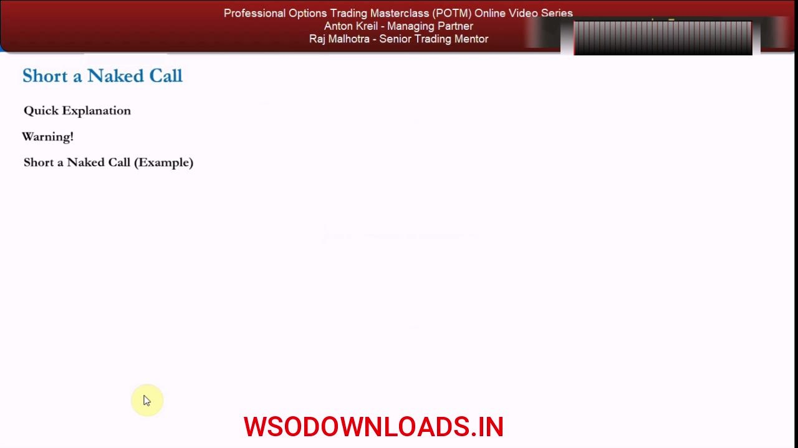
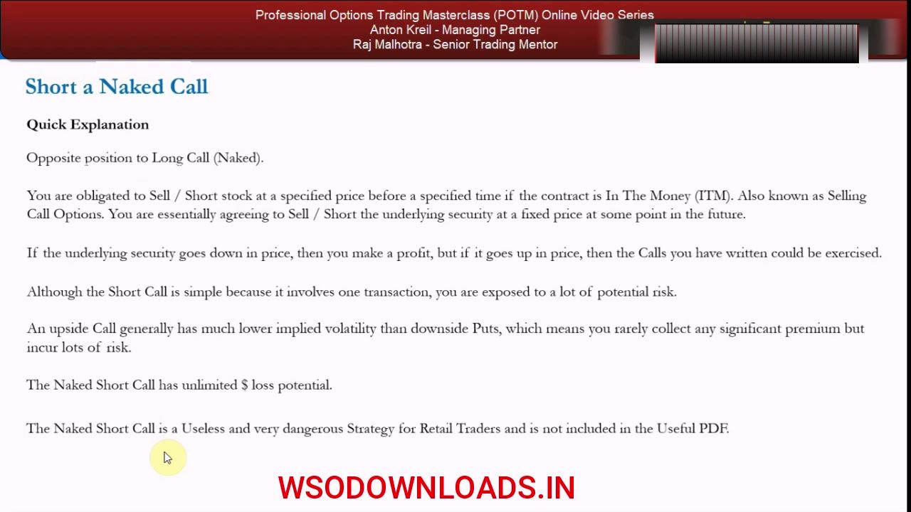
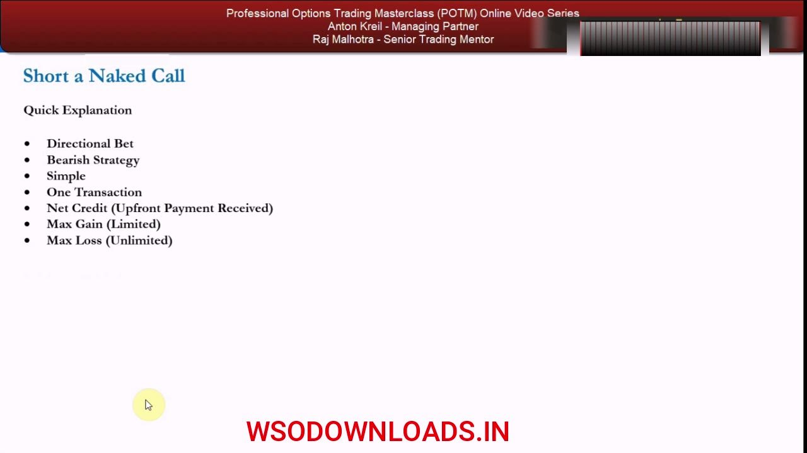
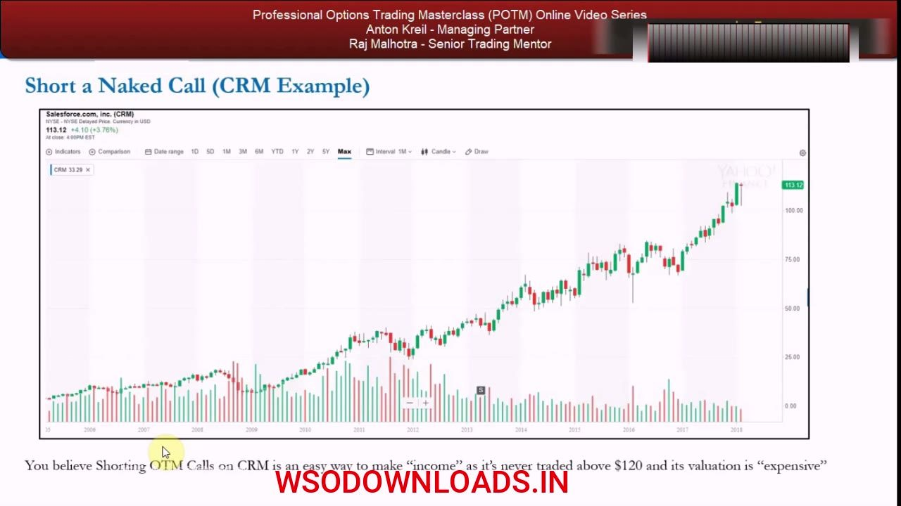
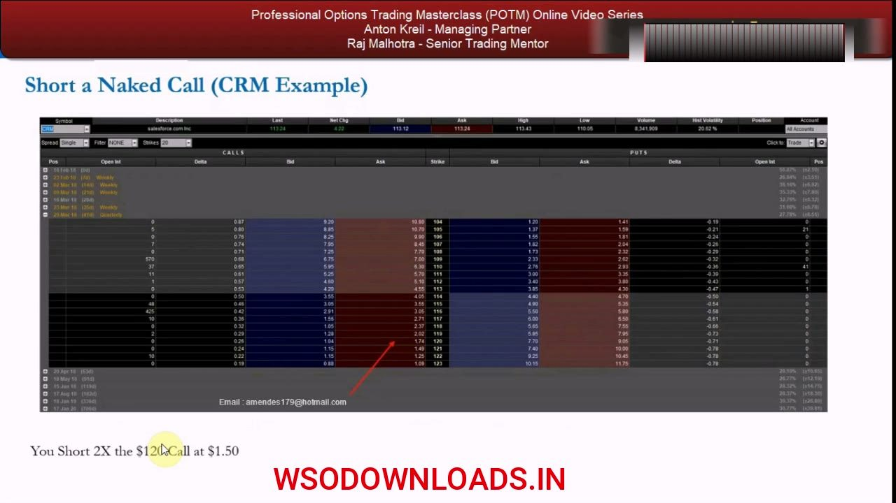
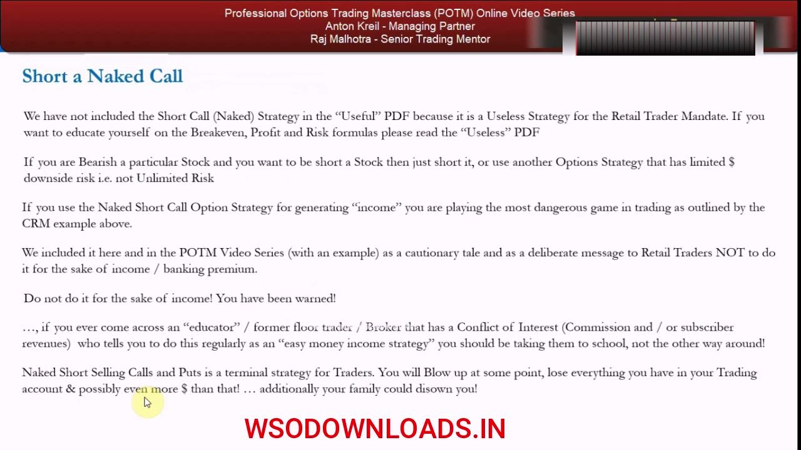

Naked Short Calls
The one strategy Anton says you should never trade — a small capped credit sold against genuinely unlimited loss.
Selling a naked call banks a tiny premium in exchange for the obligation to deliver stock at the strike no matter how high it goes. Because a stock can rise to infinity, the loss is unbounded — this chapter is included purely as a cautionary tale, not as a strategy to run.
The gist
- A naked short call SELLS a call for a net CREDIT, taking on the obligation to SELL / deliver (short) the underlying at the strike if the contract is ITM and you are assigned — the opposite position to a long call.
- Attributes: Directional Bet · Bearish · Simple · One Transaction · Net Credit · Max Gain = LIMITED (the premium) · Max Loss = UNLIMITED.
- Max loss is genuinely UNBOUNDED because a stock can rise to infinity — unlike a naked short PUT whose loss is capped at strike − premium (a stock can only fall to zero); add short-squeeze and overnight gap risk on top.
- Breakeven = strike + premium; loss per option = underlying − strike − premium; max profit = the premium, kept only if the stock stays at or below the strike.
- Upside calls generally carry much LOWER implied volatility than downside puts, so you rarely collect meaningful premium while still incurring huge risk.
- Usefulness = LOW / none for the retail mandate — a small capped credit against unlimited loss is the worst possible risk-reward shape, violating 'take as little risk as possible for as much gain as possible'.
- Anton's rule: NEVER sell naked calls. If bearish, just short the stock or use a strategy with limited downside; the only acceptable short-call form is the COVERED CALL (own the stock, capping the loss) — covered next.
- CRM worked example: uptrend to $113.12, short 2× the $120 call at $1.50 = $300 credit; a hostile-takeover gap to $170 leaves you obligated to sell at $120, a −$48.50 loss per option × 200 shares = −$9,700 (−3,133% ROI) for a $300 credit.
Why this chapter is short (and a warning)
- The naked short call is a very useless and very dangerous strategy for retail traders — it is NOT in the 'Useful' PDF.
- It is included in the POTM series deliberately: a quick explanation, a warning, and one example.
- Agenda: Quick Explanation · Warning! · Short a Naked Call (Example).
- Its only value to us is understanding the parameters — how you can lose a lot of money in options trading very, very quickly.
Anton flags up front that this video is intentionally short. The naked short call is taught not to be traded but as a cautionary example of how fast options can wipe out an account.

What a naked short call actually is
- It is the OPPOSITE position to a long call — held naked, with no underlying stock position whatsoever.
- You are obligated to SELL / short the stock at a specified price before a specified time if the contract is In The Money (ITM).
- Also known as 'selling call options' — agreeing to sell / short the underlying at a fixed price at some point in the future.
- If the underlying falls, you profit; if it rises, the calls you wrote can be exercised and you get assigned — ending up SHORT the stock at the strike.
- Simple (one transaction), but you are exposed to a lot of potential risk.
You collect a premium today for taking on the obligation to deliver stock at the strike. The counterparty holds the right to buy; if they exercise, you are forced short at the strike no matter the market price.

The core danger: loss is UNLIMITED
- The naked short call has UNLIMITED dollar loss potential because a stock in theory can go to infinity.
- Contrast with the naked short PUT, whose loss is capped at strike − premium because a stock can only fall to zero.
- On top of the unbounded upside: short-squeeze risk and overnight gap risk (the position can move against you while you cannot trade out).
- An upside call generally has much LOWER implied volatility than downside puts — so you rarely collect any significant premium while still incurring lots of risk.
This is the whole point of the lesson. A short put's downside is finite; a short call's is not. You are selling a tiny, low-IV credit against a loss that has no ceiling.
The attribute template
- Directional Bet — you are expecting the stock to go down.
- Bearish Strategy.
- Simple · One Transaction — you are just selling call options.
- Net Credit (Upfront Payment Received).
- Max Gain (Limited) — capped at the credit you receive.
- Max Loss (Unlimited).
Formalised, the shape is the worst possible risk-reward: a limited, small credit sold against an unlimited loss. That single line — Max Loss (Unlimited) — is what disqualifies it.

The 'sell calls for income' pitch — and why it's a trap
- Former floor traders, market makers, brokers and educators push selling naked calls (and puts) 'for income' — a very seductive pitch.
- It is coercive: they show standard-deviation analysis — a stock moves within bounds ~68% of the time for a 1σ move, ~95% for a 2σ move — then ask 'what could go wrong?'
- You can write naked calls one or two standard deviations out 20, 30, 40, 50 times in a row and make a decent income — but the ones you get caught on cost all your profit, and with calls often a hell of a lot more.
- The stock market is not an ATM — a stock will not do what it did in the past just because you want income.
- Every naked short seller eventually gets found out and blows up.
The odds look favourable in the historical data, which is exactly what makes the pitch dangerous. Winning many small credits does not offset the one uncapped loss that eventually arrives.
CRM example — the setup
- Salesforce (CRM), a fast-growing software-as-a-service company, in a long-run uptrend into 2018.
- Stock trading at $113.12 (+4.10, +3.76%), near all-time highs; it has never traded above $120.
- The thesis: you believe shorting OTM calls on CRM is an 'easy way to make income' because it's never been above $120 and its valuation looks 'expensive'.
- This is the seductive but flawed reasoning the rest of the example demolishes.
The setup looks reasonable on the chart — a stock that has never breached $120. Anton uses it precisely because the 'safe' looking trade is where the unbounded risk hides.

CRM example — the trade
- Option chain, CRM last 113.24; the $120 call for the 29 Mar 18 expiry is bid $1.04 / ask $1.74 (a wide spread).
- You offer the $120 call at a limit of $1.50 and Short 2× the $120 Call at $1.50.
- Two contracts × $1.50 × 100 = a $300 credit received upfront.
- In notional terms that is 200 shares short at $120 = $24,000 of stock you are obligated to deliver if assigned.
The whole reward for this trade is $300. That is the maximum you can ever make — kept only if CRM stays at or below $120 into expiry.

CRM example — the blow-up
- Scenario: Microsoft bids $170/share for CRM in a hostile takeover, announced while the market is closed — the stock gaps straight to $170 and you cannot trade out.
- Breakeven = strike + premium = $120 + $1.50 = $121.50, nowhere near the $170 print.
- Loss per option = underlying − strike − premium = $170 − $120 − $1.50 → the calls, sold at $1.50, are now worth $48.50 (i.e. $121.50 − $170 = −$48.50).
- −$48.50 × 200 shares = a −$9,700 loss for the sake of a $300 credit.
- In ROI terms that is −3,133% on the trade — and the loss would have kept growing if the stock went higher.
The gap illustrates the unbounded loss in numbers: $300 of reward, $9,700 (and rising) of loss. How many winning trades would it take to earn that back — and then lose it all in one?
The Warning — never do it
- The naked short call is NOT in the 'Useful' PDF because it's a useless strategy for the retail trader mandate; the formulas live in the 'Useless' PDF.
- If you're bearish a stock, just short it — or use an options strategy with LIMITED downside, not unlimited risk.
- Using naked short calls for 'income' is playing the most dangerous game in trading, as the CRM example shows.
- If an educator / former floor trader / broker with a conflict of interest (commission or subscriber revenue) sells you this as 'easy money income', you should be taking them to school.
- Naked short selling calls and puts is a terminal strategy — you will blow up, lose everything in your account and possibly more (the broker may chase you for margin).
The rule is absolute: never sell naked calls as a retail trader. The only acceptable form of short call is the COVERED CALL — own the underlying stock so the loss is capped — which is covered in the next lessons.

Glossary
- Naked short callSelling a call option with no offsetting stock position, for a net credit. Obligates you to sell / deliver (short) the underlying at the strike if assigned. Max gain = the premium; max loss = unlimited.
- AssignmentWhen the long-call counterparty exercises, you are obligated to sell the stock at the strike — leaving you short the underlying at that price regardless of where it trades.
- ITM (In The Money)For a call, when the underlying price is above the strike. A short call that is ITM at expiry will be assigned.
- Net creditThe premium received upfront for selling the option. For a naked short call it is the entire maximum gain.
- BreakevenFor a short call: strike + premium. Above this level the position loses money. In the CRM example: $120 + $1.50 = $121.50.
- Max loss (unlimited)Because a stock can rise to infinity, a naked short call's loss has no ceiling — the defining reason Anton says never to trade it. (A short put's loss is capped at strike − premium.)
- Implied volatility (IV)The market's expected volatility priced into an option. Upside calls generally carry much lower IV than downside puts, so short calls collect little premium for the risk taken.
- Gap riskThe risk that a stock jumps sharply between sessions (e.g. an overnight takeover bid) so you cannot trade out — as in CRM gapping from $113 to $170.
- Covered callA short call written against stock you own, so the upside loss is capped by the shares you hold. The only acceptable short-call form for the retail mandate — covered in the next lessons.
- Retail trader mandateTake as little risk as possible for as much gain as possible. The naked short call violates it completely — a limited credit against unlimited loss.